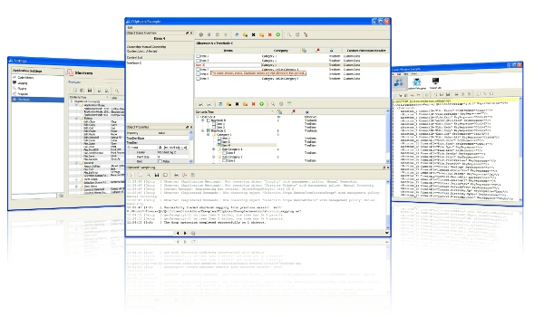
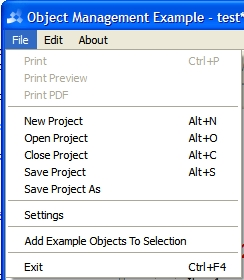

OverviewQtilities comes with a set of examples which demonstrates some of the features of the different modules. Alongside the set of examples, there is also a set of ready to use plugins. These plugins can be used in any application which uses the Qtilities Extension System. This page will give an overview of the available examples and plugins. Table of contents:

|
|
Qtilities provides the following examples which can all be built using the /src/Examples/QtilitiesExamples.pro project. Once you built the examples, you can run them directly. They are placed under the /bin/Examples output folder. Examples which demonstrate and use plugins (Object Management Example and Main Window Example) uses the multiple plugin paths feature of the Extension System module, thus they will automatically load the plugins from the /bin/Plugins folder which is the default output path of the src/Plugins/QtilitiesPlugins.pro project.
| Examples: | |
| Console Logging Example: | An example which demonstrates basic logging operations using the Logging Module. The example logs messages to different logger engines and demonstrates the output formats of the available formatting engines in the module. The following modules are used: |
| Building Tree Structures Example: | An example which demonstrates basic tree building operations using the classes available in the Qtilities::CoreGui module. The example builds a simple tree structure and shows it in an Qtilities::CoreGui::ObserverWidget. The Building Trees page provides more details on the tree building classes available in Qtilities. The following modules are used: |
| Object Management Example: | An example which allows the user to create new objects and build up a tree visually using a Qtilities::CoreGui::ObserverWidget widget as the front-end to a Qtilities::Core::Observer class. The example uses all the Qtilities libraries and showcases many of the concepts and features found in the different modules, more specifically:
This example uses the following modules and plugins: |
| Clipboard Example: | The clipboard example demonstrates some of the more advanced features of the Qtilities::CoreGui::ObserverWidget class:
The following modules are used: |
| Main Window Example: | An example which allows the user to browse the file system and open files in the file system. The main goal of this example is to demonstrate the dynamic side widget concept of the Qtilities main window architecture. The example is almost the same as the Object Management Example in terms of action management, plugin management etc. The main difference is that a mode was added to the main window which demonstrates the use of dynamic side widgets. One thing that this plugin does as well is to show a splash window at startup providing progress messages from the extension system. This example uses the following modules and plugins: |
| Observer Widget Example: | This example demonstrates how Qtilities::CoreGui::ObserverWidget widgets interact with observer hints and contains the code uses to generate the screenshots in the Observer Widgets article. The following modules are used: |
| Exporting Example: | This example demonstrates how to use the Qtilities::Core::Interfaces::IExportable interface. The following modules are used: |
| The Basics Example: | This example is discussed in the The Basics: A Simple Qtilities Application article. The following modules are used: |
| Tasking Example: | This example demonstrates how to use the tasking funcationlity provided by Qtilities. The following modules are used: |
Qtilities provides the following plugins which can all be build using the /src/Plugins/QtilitiesPlugins.pro project. All these plugins uses a feature of the Qtilities Extension System which allows the plugins to be independent of the application they are used in. Thus they can be used in any Qtilities application if the following requirements are met:
| Plugins: | |
| Plugin Template: | A skeleton of plugins in the Extension System. Use this plugin as a starting point (template) when creating new plugins to be used with the Qtilities Extension System module. |
| Project Management Plugin: | The project management plugin can be used to add project management functionality to any application which contains objects implementing the Qtilities::ProjectManagement::IProjectItem interface which are registered in the global object pool. The plugin will do the following when loaded:

Project Management Plugin Menu Items |
| Session Log Plugin: | The session log plugin can be used to add a ready to use session log mode to your application when you use the Qtilities main window architecture and the extension system module. The plugin will do the following when loaded:
|
| Help Plugin: | The help plugin will add a mode to your application which allows you to view the |
| Debug Plugin: | The debug plugin adds a debug mode to your application which provides debugging information at runtime. For more information see the Debugging Qtilities Applications article. |
| Qtilities : Reference Documentation | Back to top | Copyright © 2009-2013, Jaco Naude |